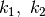
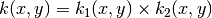
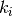
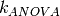
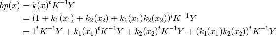

tutorial : A kernel overview¶
The aim of this tutorial is to give a better understanding of the kernel objects in GPy and to list the ones that are already implemented. The code shown in this tutorial can be obtained at GPy/examples/tutorials.py or by running GPy.examples.tutorials.tuto_kernel_overview().
First we import the libraries we will need
import pylab as pb
import numpy as np
import GPy
pb.ion()
For most kernels, the dimension is the only mandatory parameter to define a kernel object. However, it is also possible to specify the values of the parameters. For example, the three following commands are valid for defining a squared exponential kernel (ie rbf or Gaussian)
ker1 = GPy.kern.RBF(1) # Equivalent to ker1 = GPy.kern.RBF(input_dim=1, variance=1., lengthscale=1.)
ker2 = GPy.kern.RBF(input_dim=1, variance = .75, lengthscale=2.)
ker3 = GPy.kern.RBF(1, .5, .5)
A print and a plot functions are implemented to represent kernel objects. The commands
print ker2
ker1.plot()
ker2.plot()
ker3.plot()
return:
Name | Value | Constraints | Ties
-------------------------------------------------------
rbf_variance | 0.7500 | |
rbf_lengthscale | 2.0000 | |

Implemented kernels¶
Many kernels are already implemented in GPy. The following figure gives a summary of most of them (a comprehensive list can be list can be found here):

On the other hand, it is possible to use the sympy package to build new kernels. This will be the subject of another tutorial.
Operations to combine kernels¶
In GPy, kernel objects can be added or multiplied. In both cases, two kinds of operations are possible since one can assume that the kernels to add/multiply are defined on the same space or on different subspaces. In other words, it is possible to use two kernels  over to create
- a kernel over : .
This is available in GPy via the add and prod functions. Here is a quick example
k1 = GPy.kern.RBF(1,1.,2.)
k2 = GPy.kern.Matern32(1, 0.5, 0.2)
# Product of kernels
k_prod = k1.prod(k2)
# Sum of kernels
k_add = k1.add(k2)

A shortcut for add and prod is provided by the usual + and * operators. Here is another example where we create a periodic kernel with some decay
k1 = GPy.kern.RBF(1,1.,2)
k2 = GPy.kern.PeriodicMatern52(1,variance=1e3, lengthscale=1, period = 1.5, lower=-5., upper = 5)
k = k1 * k2 # equivalent to k = k1.prod(k2)
print k
# Simulate sample paths
X = np.linspace(-5,5,501)[:,None]
Y = np.random.multivariate_normal(np.zeros(501),k.K(X),1)

In general, kern objects can be seen as a sum of kernparts objects, where the later are covariance functions defined on the same space. For example, the following code
k = (k1+k2)*(k1+k2)
print k.parts[0].name, '\n', k.parts[1].name, '\n', k.parts[1].parts[0].name, '\n', k.parts[1].parts[1].name, '\n'
- returns ::
- add_1 add_2 rbf periodic_Matern52
Constraining the parameters¶
Various constrains can be applied to the parameters of a kernel
constrain_fixedto fix the value of a parameter (the value will not be modified during optimisation)constrain_positiveto make sure the parameter is greater than 0.constrain_boundedto impose the parameter to be in a given range.tie_paramsto impose the value of two (or more) parameters to be equal.
When calling one of these functions, the parameters to constrain can either by specified by a regular expression that matches its name or by a number that corresponds to the rank of the parameter. Here is an example
k1 = GPy.kern.RBF(1)
k2 = GPy.kern.Matern32(1)
k3 = GPy.kern.White(1)
k = k1 + k2 + k3
print k
k.constrain_positive('.*var')
k.constrain_fixed(np.array([1]),1.75)
k.tie_params('.*len')
k.unconstrain('white')
k.constrain_bounded('white',lower=1e-5,upper=.5)
print k
with output:
Name | Value | Constraints | Ties
---------------------------------------------------------
rbf_variance | 1.0000 | |
rbf_lengthscale | 1.0000 | |
Mat32_variance | 1.0000 | |
Mat32_lengthscale | 1.0000 | |
white_variance | 1.0000 | |
Name | Value | Constraints | Ties
----------------------------------------------------------
rbf_variance | 1.0000 | (+ve) |
rbf_lengthscale | 1.7500 | Fixed | (0)
Mat32_variance | 1.0000 | (+ve) |
Mat32_lengthscale | 1.7500 | | (0)
white_variance | 0.3655 | (1e-05, 0.5) |
Example : Building an ANOVA kernel¶
In two dimensions ANOVA kernels have the following form:

Let us assume that we want to define an ANOVA kernel with a Matern 3/2 kernel for . As seen previously, we can define this kernel as follows
k_cst = GPy.kern.Bias(1,variance=1.)
k_mat = GPy.kern.Matern52(1,variance=1.,lengthscale=3)
Kanova = (k_cst + k_mat).prod(k_cst + k_mat)
print Kanova
Printing the resulting kernel outputs the following
Name | Value | Constraints | Ties
---------------------------------------------------------------------------
bias<times>bias_bias_variance | 1.0000 | | (0)
bias<times>bias_bias_variance | 1.0000 | | (3)
bias<times>Mat52_bias_variance | 1.0000 | | (0)
bias<times>Mat52_Mat52_variance | 1.0000 | | (4)
bias<times>Mat52_Mat52_lengthscale | 3.0000 | | (5)
Mat52<times>bias_Mat52_variance | 1.0000 | | (1)
Mat52<times>bias_Mat52_lengthscale | 3.0000 | | (2)
Mat52<times>bias_bias_variance | 1.0000 | | (3)
Mat52<times>Mat52_Mat52_variance | 1.0000 | | (1)
Mat52<times>Mat52_Mat52_lengthscale | 3.0000 | | (2)
Mat52<times>Mat52_Mat52_variance | 1.0000 | | (4)
Mat52<times>Mat52_Mat52_lengthscale | 3.0000 | | (5)
Note the ties between the parameters of Kanova that reflect the links between the parameters of the kernparts objects. We can illustrate the use of this kernel on a toy example:
# sample inputs and outputs
X = np.random.uniform(-3.,3.,(40,2))
Y = 0.5*X[:,:1] + 0.5*X[:,1:] + 2*np.sin(X[:,:1]) * np.sin(X[:,1:])
# Create GP regression model
m = GPy.models.GPRegression(X,Y,Kanova)
m.plot()

As  corresponds to the sum of 4 kernels, the best predictor can be splited in a sum of 4 functions

The submodels can be represented with the option which_function of plot:
pb.figure(figsize=(20,3))
pb.subplots_adjust(wspace=0.5)
axs = pb.subplot(1,5,1)
m.plot(ax=axs)
pb.subplot(1,5,2)
pb.ylabel("= ",rotation='horizontal',fontsize='30')
axs = pb.subplot(1,5,3)
m.plot(ax=axs, which_parts=[False,True,False,False])
pb.ylabel("cst +",rotation='horizontal',fontsize='30')
axs = pb.subplot(1,5,4)
m.plot(ax=axs, which_parts=[False,False,True,False])
pb.ylabel("+ ",rotation='horizontal',fontsize='30')
axs = pb.subplot(1,5,5)
pb.ylabel("+ ",rotation='horizontal',fontsize='30')
m.plot(ax=axs, which_parts=[False,False,False,True])
{kind=link}